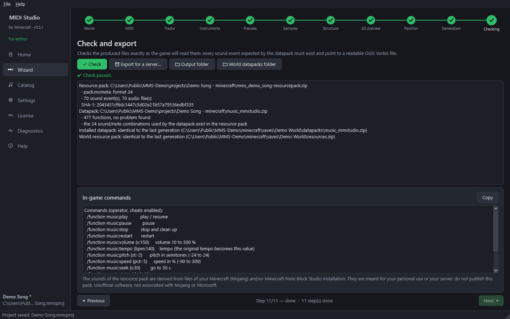

Step 10 — Generate, install and check (wizard steps 10 and 11)
Generation (step 10)

- The Checks list must be green: world closed in Minecraft, structure and samples ready, position confirmed.
- Packs and options — pack name, description, version, icon.
- Click Generate and install in the world….
- A confirmation window lists exactly what will happen: files written, structure area, world backup. Confirm.
- The software makes a ZIP backup of the world, then installs:
- the datapack in
datapacks/music_mmstudio.zip; - the world's resource pack (
resources.zipin 1.21,resourcepacks/resources.zipin 26.x): Minecraft loads it automatically when the world opens, and only in that world.
- the datapack in
No file is ever deleted: a replaced file is moved into the backup folder.
Generate the files only writes nothing into the world (for a server or a manual installation).
Check (step 11)

Click Check: the files are re-read exactly as the game will read them (every sound event exists and is a valid OGG Vorbis file, every sound used by the datapack is in the resource pack, the installed files are identical). The in-game commands are listed below.
Next guide: in Minecraft.